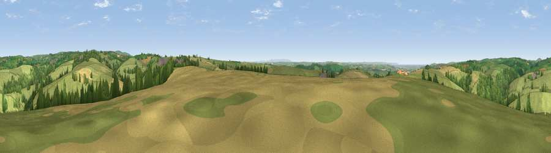

Viewpoint near Stoke Rivers
#7897 in England · top 18% of its area beats it · near Stoke RiversThe view, rendered

A 360° render of this exact spot computed from the terrain model, tree cover and land cover — summer colours, afternoon light, calibrated against photographs of famous viewpoints. Real trees, hedges and buildings will differ in detail.
The panorama
Grey silhouette: terrain skyline in each direction (720 bearings, Earth curvature and refraction included). Dashed green: skyline with trees (+15 m) and buildings (+8 m) as obstacles. Blue strip: how far the ground is visible on each bearing.
Where the view opens
Wedge length = distance to the farthest visible ground on that bearing (vegetation-aware). Rings at 10, 25 and 50 km.
What fills the view
69% grassland · 15% woodland · 14% cropland · 1% built-up ·
Angular shares of the visible panorama (visual magnitude), not map area. Landscape diversity 0.39 (0–1 Shannon).
Key numbers
More beautiful places nearby
The staircase of upgrades: each row has a higher view potential than everything closer. Driving times are estimates from straight-line distance, calibrated against real road routing — check an actual route before setting out.
| Place | Direction | Drive | Score |
|---|---|---|---|
| Viewpoint near Goodleigh | SW · 2 km | ~6 min | 68.3 |
| Viewpoint near Landkey | SW · 3 km | ~7 min | 69.5 |
| Viewpoint near Bratton Fleming | NE · 5 km | ~11 min | 69.8 |
| Viewpoint near Landkey | SSW · 5 km | ~12 min | 74.0 |
| Codden Hill | SW · 6 km | ~13 min | 81.3 |
| Holdstone Hill | N · 13 km | ~24 min | 90.2 |
| The Knoll | ESE · 103 km | ~127 min | 91.0 |
51.09145, -3.97337 · source: screening · position refined by local search. Computed location — check access rights before visiting.